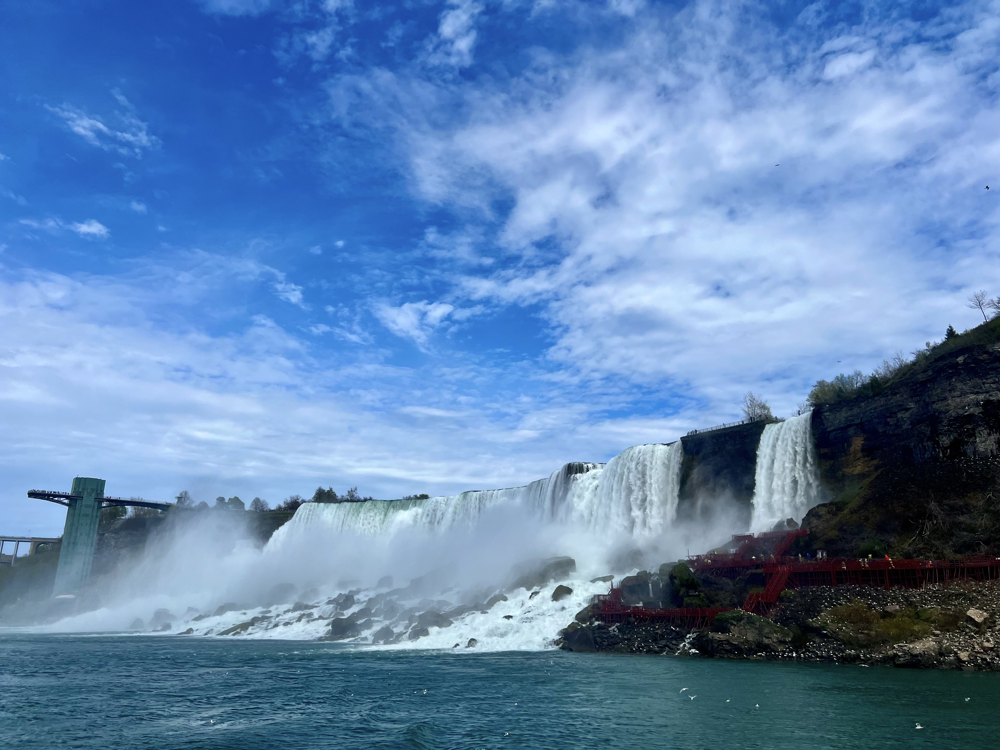

Hi, I'm Junqing Peng
Welcome to my portfolio!
Welcome to my portfolio!
Hi, I’m Junqing Peng. I earned my Bachelor’s in Mathematics at Arizona State University and my Master’s in Applied Statistics at Penn State. Over the years, I’ve developed strong analytical and computational skills, and I love applying them to creative, interdisciplinary projects.
I’m particularly fascinated by the intersection of data, technology, and media arts. I enjoy using statistical modeling, data visualization, and computational tools to create interactive and visually engaging projects.
Outside of work and research, I have a range of hobbies that inspire my creativity. I’m passionate about movies and TV shows, especially Christopher Nolan films, Tom Cruise movies, Batman films, and series like The Big Bang Theory and Friends. In technology, I enjoy Apple products, follow their launch events, and am also interested in chip technology, cars, and Formula 1 racing. I also enjoy traveling and photography, capturing interesting moments and scenes from my trips.
This portfolio reflects my work, creativity, and curiosity for innovative applications of data. I’m excited to continue learning, experimenting, and exploring new ways to combine art, technology, and science.
Now, I am a artificial intelligence engineer in a internet company.`
Here are some photos I took
